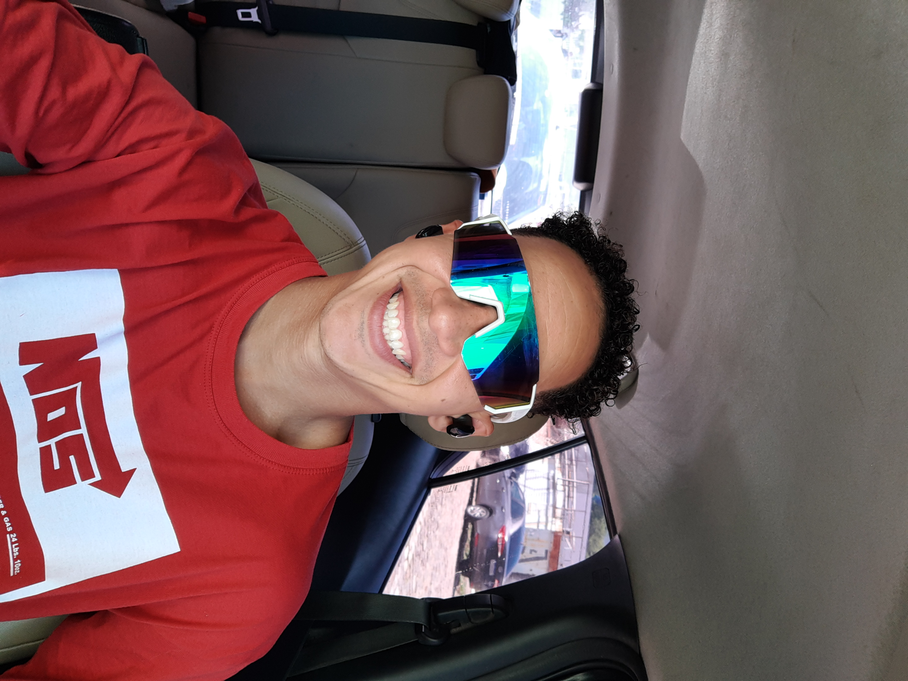

One year, compressed
October 2025
First public DOILate 2025
Multi-model AI investigations2026
Research and build surface expands fast2026 · Accepted
Six papers acceptedCurrent
Public infrastructure, running nowNo lab, no institution, no funding. In one year: six accepted papers, a national satellite-change raster of Brazil, 887 mapped territorial trajectories, and open research infrastructure anyone can run. One person, AI systems, open data and relentless construction.

I did not start with a lab. I started with questions, and I built the lab.
First DOI in October 2025. By October 2026: papers accepted at CHI 2026 workshops, IJCAI-ECAI, NeurIPS workshops, ICOI and TAAI, plus systems that read the Brazilian territory from space. Every artifact is public and open to inspection.
The broader operating model is called LUXVERSO Research & Build. Its domains change (multi-model AI, territorial intelligence, biotechnology, public data, scientific discovery), but the move is always the same: take a hard question, build the representation, run the experiment, ship the system, ask the next question.
Six public systems. Open them, run them, break them.
A public hub connecting research, infrastructure, projects, and evidence. The operating cycle is explicit: understand, represent, design, build, test, apply, document, next question.
Author hub · LUXVERSOPublic research infrastructure for discovery, evidence, provenance, relationships, gaps, versioned manifests, claim audits, and defensible next actions. It contains Python code, schemas, tests, examples, and documentation.
RepositoryTerritorial intelligence built around satellite embeddings, temporal change, similarity search, rankings, maps, and human inspection. Public cases include Candeias/BA, SIGMINE/Pará, Cerrado trajectories, and national TTI work.
Public site · RepositoryThe TTI repository contains a national raster, datasets, a Colab notebook, and a preprint. The Atlas contains 887 satellite-embedding trajectories across six transformation phenomena.
TTI Brazil · AtlasA public investigation layer for literature, patents, organisms, processes, actors, relations, provenance, and evidence limits. The repository exposes evidence pages, relation maps, provenance registers, and public manifests.
Public site · RepositoryAn evidence-driven research record that preserves negative results, provenance contradictions, changed questions, and a clearly bounded synthetic sandbox. It does not present computational experiments as biological proof.
Public record · RepositoryThe projects are not a random list of interests. They are different applications of a recurring infrastructure for turning fragmented sources into testable next actions.
ORCID record · 0009-0000-6006-1516
OpenReview profile
GitHub profile
The Illusion of Consensus in Human-Centered Interactive AI
When Humans Become Regime Stabilizers
Territorial Change Detection Under Zero-Budget Constraints
Speed without discipline is noise. Every claim in this record carries a status, so the work can be pushed further without losing the thread.
AI and open infrastructure have changed what one determined person can attempt before any institution says yes. This record is what that looks like after twelve months, starting from Brazil and aimed at problems that matter far beyond it.
What becomes possible in the space between an individual and an institution? Watch what comes next.
With support, the same method scales: more territory, more domains, faster cycles. Talk to me: viniburilux@gmail.com.